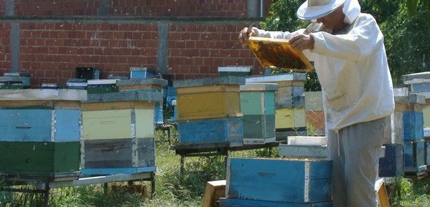

Products
Honeybee
Bacnotan goes as far as adopting a healthier lifestyle and finding an alternative livelihood in honey production. So the government decide to established a honeybee center.
The center serves as a facility for processing raw honey, as well as an equipment store for those who want to start beekeeping.
Honey byproducts produced in the center include honey vinegar, massage oil, all-purpose balm, honey and propolis (substance collected by bees from
leaf buds and tree barks) soap and bee pollen.
Honey is the One Town One Product (Otop) of La Union. The province’s apiculture program has been cited by the government as the Luzon Island Best Otop Implementor.


Holcim Cement

The plaza was beautiful with lots of human size cartoon characters like Dora and Boots. Our national hero Dr. Jose Rizal also have his monument here at the plaza.
Besides the statue was a stone tablet that tells about the foundation of the plaza. There is also basketball court for recreational activity. People of Bacnotan can never be bored here.
Address: Holcim Philippines - La Union Plant, Quirino, Bacnotan, La Union 2515
Phone: +63(72)8884252